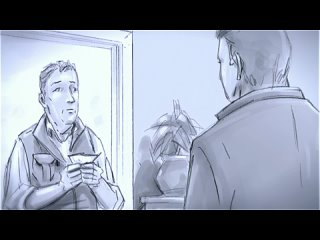
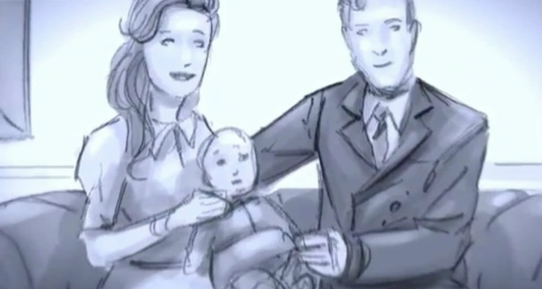

Эра Одиннадцатого Доктора
<<< НАЗАД ||| Постскриптум ||| ДАЛЬШЕ >>>
или с субтитрами:

P.S.
анимационный мини-эпизод к 7 сезону
12 октября 2012
Формат: 5-минутный эпизод
| Варианты озвучек: | * MVO BaibaKo |
|---|---|
| Скачивание и просмотр: |
Сюжет раскрывает некоторые подробности из жизни Эми и Рори в Нью-Йорке XX века после их прощания с Доктором. Кроме того, здесь произошло третье и последнее появление Брайана Уильямса, отца Рори.
